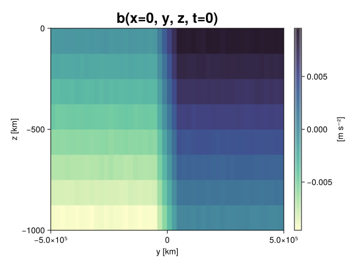
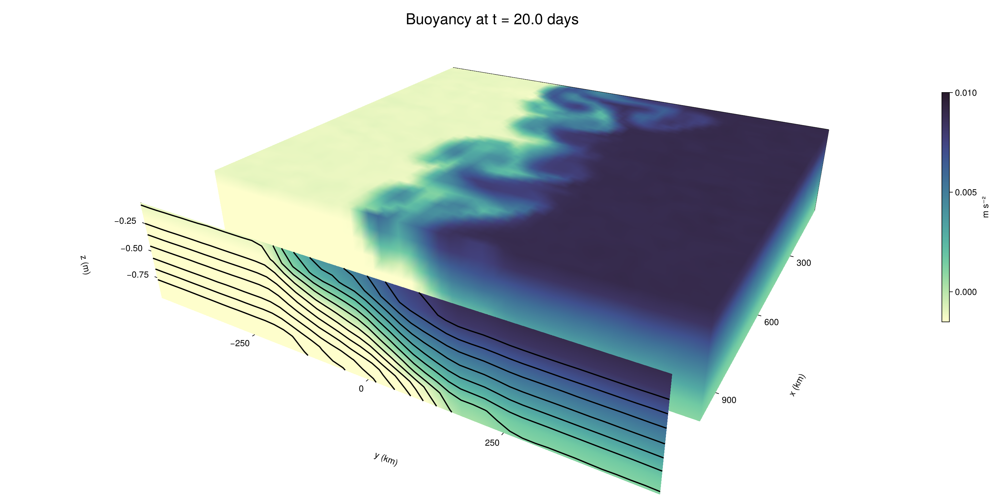

Baroclinic adjustment
In this example, we simulate the evolution and equilibration of a baroclinically unstable front.
Install dependencies
First let's make sure we have all required packages installed.
using Pkg
pkg"add Oceananigans, CairoMakie"using Oceananigans
using Oceananigans.UnitsGrid
We use a three-dimensional channel that is periodic in the x direction:
Lx = 1000kilometers # east-west extent [m]
Ly = 1000kilometers # north-south extent [m]
Lz = 1kilometers # depth [m]
grid = RectilinearGrid(size = (48, 48, 8),
x = (0, Lx),
y = (-Ly/2, Ly/2),
z = (-Lz, 0),
topology = (Periodic, Bounded, Bounded))48×48×8 RectilinearGrid{Float64, Periodic, Bounded, Bounded} on CPU with 3×3×3 halo
├── Periodic x ∈ [0.0, 1.0e6) regularly spaced with Δx=20833.3
├── Bounded y ∈ [-500000.0, 500000.0] regularly spaced with Δy=20833.3
└── Bounded z ∈ [-1000.0, 0.0] regularly spaced with Δz=125.0Model
We built a HydrostaticFreeSurfaceModel with an ImplicitFreeSurface solver. Regarding Coriolis, we use a beta-plane centered at 45° South.
model = HydrostaticFreeSurfaceModel(; grid,
coriolis = BetaPlane(latitude = -45),
buoyancy = BuoyancyTracer(),
tracers = :b,
momentum_advection = WENO(),
tracer_advection = WENO())HydrostaticFreeSurfaceModel{CPU, RectilinearGrid}(time = 0 seconds, iteration = 0)
├── grid: 48×48×8 RectilinearGrid{Float64, Periodic, Bounded, Bounded} on CPU with 3×3×3 halo
├── timestepper: QuasiAdamsBashforth2TimeStepper
├── tracers: b
├── closure: Nothing
├── buoyancy: BuoyancyTracer with ĝ = NegativeZDirection()
├── free surface: ImplicitFreeSurface with gravitational acceleration 9.80665 m s⁻²
│ └── solver: FFTImplicitFreeSurfaceSolver
├── advection scheme:
│ ├── momentum: WENO reconstruction order 5
│ └── b: WENO reconstruction order 5
└── coriolis: BetaPlane{Float64}We start our simulation from rest with a baroclinically unstable buoyancy distribution. We use ramp(y, Δy), defined below, to specify a front with width Δy and horizontal buoyancy gradient M². We impose the front on top of a vertical buoyancy gradient N² and a bit of noise.
"""
ramp(y, Δy)
Linear ramp from 0 to 1 between -Δy/2 and +Δy/2.
For example:
```
y < -Δy/2 => ramp = 0
-Δy/2 < y < -Δy/2 => ramp = y / Δy
y > Δy/2 => ramp = 1
```
"""
ramp(y, Δy) = min(max(0, y/Δy + 1/2), 1)
N² = 1e-5 # [s⁻²] buoyancy frequency / stratification
M² = 1e-7 # [s⁻²] horizontal buoyancy gradient
Δy = 100kilometers # width of the region of the front
Δb = Δy * M² # buoyancy jump associated with the front
ϵb = 1e-2 * Δb # noise amplitude
bᵢ(x, y, z) = N² * z + Δb * ramp(y, Δy) + ϵb * randn()
set!(model, b=bᵢ)Let's visualize the initial buoyancy distribution.
using CairoMakie
# Build coordinates with units of kilometers
x, y, z = 1e-3 .* nodes(grid, (Center(), Center(), Center()))
b = model.tracers.b
fig, ax, hm = heatmap(view(b, 1, :, :),
colormap = :deep,
axis = (xlabel = "y [km]",
ylabel = "z [km]",
title = "b(x=0, y, z, t=0)",
titlesize = 24))
Colorbar(fig[1, 2], hm, label = "[m s⁻²]")
fig
Simulation
Now let's build a Simulation.
simulation = Simulation(model, Δt=20minutes, stop_time=20days)Simulation of HydrostaticFreeSurfaceModel{CPU, RectilinearGrid}(time = 0 seconds, iteration = 0)
├── Next time step: 20 minutes
├── Elapsed wall time: 0 seconds
├── Wall time per iteration: NaN days
├── Stop time: 20 days
├── Stop iteration : Inf
├── Wall time limit: Inf
├── Callbacks: OrderedDict with 4 entries:
│ ├── stop_time_exceeded => Callback of stop_time_exceeded on IterationInterval(1)
│ ├── stop_iteration_exceeded => Callback of stop_iteration_exceeded on IterationInterval(1)
│ ├── wall_time_limit_exceeded => Callback of wall_time_limit_exceeded on IterationInterval(1)
│ └── nan_checker => Callback of NaNChecker for u on IterationInterval(100)
├── Output writers: OrderedDict with no entries
└── Diagnostics: OrderedDict with no entriesWe add a TimeStepWizard callback to adapt the simulation's time-step,
conjure_time_step_wizard!(simulation, IterationInterval(20), cfl=0.2, max_Δt=20minutes)Also, we add a callback to print a message about how the simulation is going,
using Printf
wall_clock = Ref(time_ns())
function print_progress(sim)
u, v, w = model.velocities
progress = 100 * (time(sim) / sim.stop_time)
elapsed = (time_ns() - wall_clock[]) / 1e9
@printf("[%05.2f%%] i: %d, t: %s, wall time: %s, max(u): (%6.3e, %6.3e, %6.3e) m/s, next Δt: %s\n",
progress, iteration(sim), prettytime(sim), prettytime(elapsed),
maximum(abs, u), maximum(abs, v), maximum(abs, w), prettytime(sim.Δt))
wall_clock[] = time_ns()
return nothing
end
add_callback!(simulation, print_progress, IterationInterval(100))Diagnostics/Output
Here, we save the buoyancy, $b$, at the edges of our domain as well as the zonal ($x$) average of buoyancy.
u, v, w = model.velocities
ζ = ∂x(v) - ∂y(u)
B = Average(b, dims=1)
U = Average(u, dims=1)
V = Average(v, dims=1)
filename = "baroclinic_adjustment"
save_fields_interval = 0.5day
slicers = (east = (grid.Nx, :, :),
north = (:, grid.Ny, :),
bottom = (:, :, 1),
top = (:, :, grid.Nz))
for side in keys(slicers)
indices = slicers[side]
simulation.output_writers[side] = JLD2OutputWriter(model, (; b, ζ);
filename = filename * "_$(side)_slice",
schedule = TimeInterval(save_fields_interval),
overwrite_existing = true,
indices)
end
simulation.output_writers[:zonal] = JLD2OutputWriter(model, (; b=B, u=U, v=V);
filename = filename * "_zonal_average",
schedule = TimeInterval(save_fields_interval),
overwrite_existing = true)JLD2OutputWriter scheduled on TimeInterval(12 hours):
├── filepath: baroclinic_adjustment_zonal_average.jld2
├── 3 outputs: (b, u, v)
├── array type: Array{Float64}
├── including: [:grid, :coriolis, :buoyancy, :closure]
├── file_splitting: NoFileSplitting
└── file size: 31.6 KiBNow we're ready to run.
@info "Running the simulation..."
run!(simulation)
@info "Simulation completed in " * prettytime(simulation.run_wall_time)[ Info: Running the simulation...
[ Info: Initializing simulation...
[00.00%] i: 0, t: 0 seconds, wall time: 29.457 seconds, max(u): (0.000e+00, 0.000e+00, 0.000e+00) m/s, next Δt: 20 minutes
[ Info: ... simulation initialization complete (29.104 seconds)
[ Info: Executing initial time step...
[ Info: ... initial time step complete (18.871 seconds).
[06.94%] i: 100, t: 1.389 days, wall time: 39.344 seconds, max(u): (1.295e-01, 1.185e-01, 1.521e-03) m/s, next Δt: 20 minutes
[13.89%] i: 200, t: 2.778 days, wall time: 953.532 ms, max(u): (2.147e-01, 1.664e-01, 1.760e-03) m/s, next Δt: 20 minutes
[20.83%] i: 300, t: 4.167 days, wall time: 891.729 ms, max(u): (2.880e-01, 2.176e-01, 1.752e-03) m/s, next Δt: 20 minutes
[27.78%] i: 400, t: 5.556 days, wall time: 1.065 seconds, max(u): (3.683e-01, 2.854e-01, 1.706e-03) m/s, next Δt: 20 minutes
[34.72%] i: 500, t: 6.944 days, wall time: 852.000 ms, max(u): (4.393e-01, 3.852e-01, 1.972e-03) m/s, next Δt: 20 minutes
[41.67%] i: 600, t: 8.333 days, wall time: 902.907 ms, max(u): (5.451e-01, 5.831e-01, 2.044e-03) m/s, next Δt: 20 minutes
[48.61%] i: 700, t: 9.722 days, wall time: 805.796 ms, max(u): (7.366e-01, 9.245e-01, 3.571e-03) m/s, next Δt: 20 minutes
[55.56%] i: 800, t: 11.111 days, wall time: 907.439 ms, max(u): (1.065e+00, 1.109e+00, 3.938e-03) m/s, next Δt: 20 minutes
[62.50%] i: 900, t: 12.500 days, wall time: 869.181 ms, max(u): (1.279e+00, 1.331e+00, 4.488e-03) m/s, next Δt: 20 minutes
[69.44%] i: 1000, t: 13.889 days, wall time: 935.901 ms, max(u): (1.432e+00, 1.329e+00, 5.030e-03) m/s, next Δt: 20 minutes
[76.39%] i: 1100, t: 15.278 days, wall time: 911.489 ms, max(u): (1.536e+00, 1.283e+00, 4.060e-03) m/s, next Δt: 20 minutes
[83.33%] i: 1200, t: 16.667 days, wall time: 822.823 ms, max(u): (1.368e+00, 1.050e+00, 4.321e-03) m/s, next Δt: 20 minutes
[90.28%] i: 1300, t: 18.056 days, wall time: 911.220 ms, max(u): (1.584e+00, 1.248e+00, 3.017e-03) m/s, next Δt: 20 minutes
[97.22%] i: 1400, t: 19.444 days, wall time: 926.223 ms, max(u): (1.376e+00, 1.159e+00, 3.106e-03) m/s, next Δt: 20 minutes
[ Info: Simulation is stopping after running for 1.072 minutes.
[ Info: Simulation time 20 days equals or exceeds stop time 20 days.
[ Info: Simulation completed in 1.073 minutes
Visualization
All that's left is to make a pretty movie. Actually, we make two visualizations here. First, we illustrate how to make a 3D visualization with Makie's Axis3 and Makie.surface. Then we make a movie in 2D. We use CairoMakie in this example, but note that using GLMakie is more convenient on a system with OpenGL, as figures will be displayed on the screen.
using CairoMakieThree-dimensional visualization
We load the saved buoyancy output on the top, north, and east surface as FieldTimeSerieses.
filename = "baroclinic_adjustment"
sides = keys(slicers)
slice_filenames = NamedTuple(side => filename * "_$(side)_slice.jld2" for side in sides)
b_timeserieses = (east = FieldTimeSeries(slice_filenames.east, "b"),
north = FieldTimeSeries(slice_filenames.north, "b"),
top = FieldTimeSeries(slice_filenames.top, "b"))
B_timeseries = FieldTimeSeries(filename * "_zonal_average.jld2", "b")
times = B_timeseries.times
grid = B_timeseries.grid48×48×8 RectilinearGrid{Float64, Periodic, Bounded, Bounded} on CPU with 3×3×3 halo
├── Periodic x ∈ [0.0, 1.0e6) regularly spaced with Δx=20833.3
├── Bounded y ∈ [-500000.0, 500000.0] regularly spaced with Δy=20833.3
└── Bounded z ∈ [-1000.0, 0.0] regularly spaced with Δz=125.0We build the coordinates. We rescale horizontal coordinates to kilometers.
xb, yb, zb = nodes(b_timeserieses.east)
xb = xb ./ 1e3 # convert m -> km
yb = yb ./ 1e3 # convert m -> km
Nx, Ny, Nz = size(grid)
x_xz = repeat(x, 1, Nz)
y_xz_north = y[end] * ones(Nx, Nz)
z_xz = repeat(reshape(z, 1, Nz), Nx, 1)
x_yz_east = x[end] * ones(Ny, Nz)
y_yz = repeat(y, 1, Nz)
z_yz = repeat(reshape(z, 1, Nz), grid.Ny, 1)
x_xy = x
y_xy = y
z_xy_top = z[end] * ones(grid.Nx, grid.Ny)Then we create a 3D axis. We use zonal_slice_displacement to control where the plot of the instantaneous zonal average flow is located.
fig = Figure(size = (1600, 800))
zonal_slice_displacement = 1.2
ax = Axis3(fig[2, 1],
aspect=(1, 1, 1/5),
xlabel = "x (km)",
ylabel = "y (km)",
zlabel = "z (m)",
xlabeloffset = 100,
ylabeloffset = 100,
zlabeloffset = 100,
limits = ((x[1], zonal_slice_displacement * x[end]), (y[1], y[end]), (z[1], z[end])),
elevation = 0.45,
azimuth = 6.8,
xspinesvisible = false,
zgridvisible = false,
protrusions = 40,
perspectiveness = 0.7)Axis3()We use data from the final savepoint for the 3D plot. Note that this plot can easily be animated by using Makie's Observable. To dive into Observables, check out Makie.jl's Documentation.
n = length(times)41Now let's make a 3D plot of the buoyancy and in front of it we'll use the zonally-averaged output to plot the instantaneous zonal-average of the buoyancy.
b_slices = (east = interior(b_timeserieses.east[n], 1, :, :),
north = interior(b_timeserieses.north[n], :, 1, :),
top = interior(b_timeserieses.top[n], :, :, 1))
# Zonally-averaged buoyancy
B = interior(B_timeseries[n], 1, :, :)
clims = 1.1 .* extrema(b_timeserieses.top[n][:])
kwargs = (colorrange=clims, colormap=:deep, shading=NoShading)
surface!(ax, x_yz_east, y_yz, z_yz; color = b_slices.east, kwargs...)
surface!(ax, x_xz, y_xz_north, z_xz; color = b_slices.north, kwargs...)
surface!(ax, x_xy, y_xy, z_xy_top; color = b_slices.top, kwargs...)
sf = surface!(ax, zonal_slice_displacement .* x_yz_east, y_yz, z_yz; color = B, kwargs...)
contour!(ax, y, z, B; transformation = (:yz, zonal_slice_displacement * x[end]),
levels = 15, linewidth = 2, color = :black)
Colorbar(fig[2, 2], sf, label = "m s⁻²", height = Relative(0.4), tellheight=false)
title = "Buoyancy at t = " * string(round(times[n] / day, digits=1)) * " days"
fig[1, 1:2] = Label(fig, title; fontsize = 24, tellwidth = false, padding = (0, 0, -120, 0))
rowgap!(fig.layout, 1, Relative(-0.2))
colgap!(fig.layout, 1, Relative(-0.1))
save("baroclinic_adjustment_3d.png", fig)
Two-dimensional movie
We make a 2D movie that shows buoyancy $b$ and vertical vorticity $ζ$ at the surface, as well as the zonally-averaged zonal and meridional velocities $U$ and $V$ in the $(y, z)$ plane. First we load the FieldTimeSeries and extract the additional coordinates we'll need for plotting
ζ_timeseries = FieldTimeSeries(slice_filenames.top, "ζ")
U_timeseries = FieldTimeSeries(filename * "_zonal_average.jld2", "u")
B_timeseries = FieldTimeSeries(filename * "_zonal_average.jld2", "b")
V_timeseries = FieldTimeSeries(filename * "_zonal_average.jld2", "v")
xζ, yζ, zζ = nodes(ζ_timeseries)
yv = ynodes(V_timeseries)
xζ = xζ ./ 1e3 # convert m -> km
yζ = yζ ./ 1e3 # convert m -> km
yv = yv ./ 1e3 # convert m -> km49-element Vector{Float64}:
-500.0
-479.1666666666667
-458.3333333333333
-437.5
-416.6666666666667
-395.8333333333333
-375.0
-354.1666666666667
-333.3333333333333
-312.5
-291.6666666666667
-270.8333333333333
-250.0
-229.16666666666666
-208.33333333333334
-187.5
-166.66666666666666
-145.83333333333334
-125.0
-104.16666666666667
-83.33333333333333
-62.5
-41.666666666666664
-20.833333333333332
0.0
20.833333333333332
41.666666666666664
62.5
83.33333333333333
104.16666666666667
125.0
145.83333333333334
166.66666666666666
187.5
208.33333333333334
229.16666666666666
250.0
270.8333333333333
291.6666666666667
312.5
333.3333333333333
354.1666666666667
375.0
395.8333333333333
416.6666666666667
437.5
458.3333333333333
479.1666666666667
500.0Next, we set up a plot with 4 panels. The top panels are large and square, while the bottom panels get a reduced aspect ratio through rowsize!.
set_theme!(Theme(fontsize=24))
fig = Figure(size=(1800, 1000))
axb = Axis(fig[1, 2], xlabel="x (km)", ylabel="y (km)", aspect=1)
axζ = Axis(fig[1, 3], xlabel="x (km)", ylabel="y (km)", aspect=1, yaxisposition=:right)
axu = Axis(fig[2, 2], xlabel="y (km)", ylabel="z (m)")
axv = Axis(fig[2, 3], xlabel="y (km)", ylabel="z (m)", yaxisposition=:right)
rowsize!(fig.layout, 2, Relative(0.3))To prepare a plot for animation, we index the timeseries with an Observable,
n = Observable(1)
b_top = @lift interior(b_timeserieses.top[$n], :, :, 1)
ζ_top = @lift interior(ζ_timeseries[$n], :, :, 1)
U = @lift interior(U_timeseries[$n], 1, :, :)
V = @lift interior(V_timeseries[$n], 1, :, :)
B = @lift interior(B_timeseries[$n], 1, :, :)Observable([-0.009371314164791091 -0.008120124934079395 -0.006903895351656246 -0.005641149062949664 -0.00437290759527137 -0.003146839006848248 -0.0018995301628083206 -0.0006216714087771335; -0.009371152944264547 -0.008145385464606615 -0.006885538841310734 -0.0056379648668666614 -0.004362847199200653 -0.0031263788838111098 -0.001889382636530194 -0.0006033650848656314; -0.009362215369915964 -0.008103190949818902 -0.006876802420591838 -0.00562360923063316 -0.00437525629972326 -0.0031067184082146392 -0.0018749669900459233 -0.0005969341032674716; -0.009372332616736066 -0.008137242938597942 -0.006903539466434603 -0.005617112329926006 -0.004382253188440565 -0.003113659925876757 -0.001874829277015061 -0.0005953218329013758; -0.009403142739156491 -0.008121501131315335 -0.006882711155681262 -0.005629409922871324 -0.004399426602281585 -0.003137467265383881 -0.0018709991555349084 -0.0006365987384848458; -0.00938926267724303 -0.008141494058131256 -0.006890568863680097 -0.0056173111069382385 -0.0043863185213432665 -0.0031354378632284176 -0.0018678023539783293 -0.0006244375500985135; -0.009358697245426602 -0.008124315305973096 -0.006871022954792986 -0.0056433482011421475 -0.0043707660338242645 -0.0031394334229100135 -0.0018730410031736668 -0.0006206662379801033; -0.009390465961971078 -0.008126480510456858 -0.006877045495709736 -0.005619851447592701 -0.004379640298305999 -0.003112171884692922 -0.0018610646438290406 -0.0006230391170182052; -0.009369425966658492 -0.00812119439916982 -0.006840294669860774 -0.005616142459043524 -0.0043716906100040274 -0.003140339458385878 -0.0018832856146178965 -0.0006581679993999282; -0.009363683615346672 -0.008101913089891737 -0.006870213360982996 -0.005637797236811715 -0.004361072057590217 -0.0031184647211726785 -0.0018739869110923693 -0.0006331523135559723; -0.00936979829481763 -0.008134797613267037 -0.006882882380408355 -0.0056451280037699775 -0.004389850311698807 -0.0031248135580843536 -0.0018800839291122594 -0.0006283041463545961; -0.009377233823457808 -0.008150565776255279 -0.006874933000671779 -0.005611296570489359 -0.004402089569777975 -0.0031422194353278522 -0.0018708743068877702 -0.0006346798198007168; -0.00937371564304868 -0.008109254012795249 -0.006855822448374239 -0.00561210755187817 -0.004410457393875566 -0.0031236536986864547 -0.00186484083770805 -0.0005946364822713842; -0.00936825401270346 -0.008131690670490792 -0.006858458142516962 -0.005628439497624715 -0.004378384230945348 -0.00314247925042151 -0.001857960765760048 -0.000634577845690128; -0.009369205713434385 -0.008133933462260205 -0.006896601037345254 -0.0056257897675207865 -0.004381637602335905 -0.0031404030029024282 -0.0018565354985204986 -0.0006516597684643558; -0.009373896829050368 -0.008126127924850218 -0.00684929706345263 -0.005624510158287501 -0.004351645068579244 -0.0031073990380934054 -0.0019106141200879816 -0.0006163851115215244; -0.009396973380649187 -0.008118949336950548 -0.006901395442206228 -0.005589575035728667 -0.004393192948191799 -0.003134465582427226 -0.0018821583460843325 -0.000629592591655741; -0.00938367190849914 -0.008135377888518954 -0.0068559759300553845 -0.005655340662403879 -0.004386410197476483 -0.003145797446613613 -0.0018834388335620918 -0.0006111292528633898; -0.009374175436858827 -0.00814320808144041 -0.0068799892687654044 -0.005624962215993461 -0.004387091196922067 -0.0031098991571415157 -0.0018667778610377906 -0.0006340496264597705; -0.009359369507242398 -0.00813447163536666 -0.006901883354203883 -0.00563255639808415 -0.004375843766711084 -0.003135794252625545 -0.0018824008015405859 -0.0006157689436635431; -0.009395805539034166 -0.008147062561593544 -0.006881677550833414 -0.0056269258717874 -0.004386697964968495 -0.003116256002494764 -0.0018724817676684582 -0.0006170017983720203; -0.009367308163332503 -0.008115445840138139 -0.006868957653947677 -0.005622601373366269 -0.004347328695121622 -0.003125897078315555 -0.0018877874378112598 -0.0006364739096761856; -0.007491480093275771 -0.006238295259214317 -0.00501205613585197 -0.003753160921416364 -0.0024779719790721934 -0.0012554059383948196 1.1220135372633653e-5 0.0012350817375272815; -0.005428467689737648 -0.00416662463561901 -0.0029066979658277036 -0.0016652358263616197 -0.0004080739221058643 0.000823033990263074 0.0020654542189686097 0.0033293356918870746; -0.0033404107365107415 -0.002064639959976207 -0.000826056456403646 0.0004240716843708009 0.0016747631928724326 0.002892888992298165 0.004178633008868658 0.005423270768644964; -0.0012583966303592298 -4.2873233838657865e-6 0.0012343050357254712 0.0025014209264275283 0.0037491469523263468 0.004994751033656954 0.006253225531973651 0.007488557450190711; 0.0006220875417530853 0.001890825867620506 0.0031460356167159254 0.004385735150316364 0.0056265021356590485 0.006873158924099305 0.008118735926539682 0.00939509213100978; 0.0006363126939981427 0.00187046741744291 0.0031127288350599135 0.0043772608418265226 0.005622476012242205 0.006877708211236878 0.008104998129003196 0.009373771459171508; 0.0006218719400895646 0.0018658560003252144 0.003124314900768171 0.004384700246262744 0.0056370275926819575 0.006868860724737948 0.008112007737022059 0.009399338993722932; 0.0006405965987139711 0.0018725412430831403 0.0031219230031630887 0.004387443005023557 0.005594587601241094 0.006871303057643974 0.008144540155899114 0.009362578134637124; 0.0006021791008000853 0.0018750591403566697 0.003137458013537427 0.0043747883621670855 0.005637511664686579 0.006870807814022252 0.008098323167813322 0.009384934391850225; 0.0006307555906427629 0.0018820722100308298 0.0031313344059952773 0.004386038848378533 0.005594420503898369 0.006873426629622548 0.008132840233017745 0.009369290569698792; 0.0006076540181152069 0.0018852283423542561 0.003109189626119592 0.0043723386496359795 0.00560835936840058 0.0068692735213325695 0.008136147095817017 0.009382067518285625; 0.0006321451827108246 0.0018857516935716096 0.0031409019108762683 0.004393530773482844 0.005625644266704464 0.006858906857380764 0.008138400380749854 0.009378695090662812; 0.0006269088257431387 0.0018884486302290012 0.0031039305599280015 0.004379814297057954 0.005611956339568804 0.006887349907689071 0.008081212713368582 0.009364121197255387; 0.000640347142119452 0.0018749772803530699 0.003136523765615564 0.004376152077651299 0.005629674200170393 0.006870072295999979 0.008137144608688451 0.009382419680789124; 0.0006142245804467756 0.0018778811226303482 0.0031260127275614426 0.004363267439045385 0.005637921397434835 0.006877157091437429 0.008121722850063021 0.00940023656760413; 0.0006540673825431989 0.0019068061703246385 0.003149669320380684 0.004392684463797141 0.005625825802886256 0.006857423282972864 0.00810954577545865 0.009361786087906216; 0.0006551126896563781 0.0018683495307341852 0.0031170280744521064 0.00436187329539865 0.005618562607608228 0.006866572216923667 0.008140799809548389 0.009371522382327102; 0.0006063465676085165 0.0018595301174261902 0.0031320538749228578 0.004378216668829298 0.005613085777311218 0.006854242268691235 0.00810708836204274 0.009379862585584108; 0.0006208199084879305 0.001881988459808531 0.0031315730495488025 0.004356866740639435 0.005609591728869994 0.006909654001819097 0.008130461024693678 0.009373800235211333; 0.0006115036101253713 0.0018761704084255739 0.00310729104847378 0.004378163543766821 0.005633055298208248 0.006869094989770897 0.008098887192793473 0.009350944381413347; 0.000624754051408988 0.0018864348145677945 0.0031156196518547018 0.004377792398250651 0.005636094653788357 0.006878002411887997 0.008124785181818082 0.009379241119616752; 0.0006413316717288676 0.0018902368277187002 0.0031222909809131573 0.004372844098250622 0.005640802313078522 0.006866566482695691 0.008127137953923733 0.009381696110866531; 0.0006013644897335449 0.0018807645782228048 0.00314121127104868 0.0043824172645062906 0.005605449296106596 0.0068876609877250436 0.008117426607279555 0.009372892650096583; 0.0006214839120437814 0.0018610170026030829 0.0031377609366913905 0.004389440653156436 0.005629558315865098 0.00689064224083569 0.00813357384362812 0.009367881267675173; 0.0006182810068299628 0.001873899984014055 0.003120510932491352 0.004371786791047331 0.005626595066022336 0.006856862863841492 0.008107638166183963 0.009387583713344489; 0.0006182805915021961 0.001907821283785445 0.0031565903789796726 0.0043877816385234645 0.005629910877210163 0.0068591388045680145 0.00813576521576255 0.00934509608019122])
and then build our plot:
hm = heatmap!(axb, xb, yb, b_top, colorrange=(0, Δb), colormap=:thermal)
Colorbar(fig[1, 1], hm, flipaxis=false, label="Surface b(x, y) (m s⁻²)")
hm = heatmap!(axζ, xζ, yζ, ζ_top, colorrange=(-5e-5, 5e-5), colormap=:balance)
Colorbar(fig[1, 4], hm, label="Surface ζ(x, y) (s⁻¹)")
hm = heatmap!(axu, yb, zb, U; colorrange=(-5e-1, 5e-1), colormap=:balance)
Colorbar(fig[2, 1], hm, flipaxis=false, label="Zonally-averaged U(y, z) (m s⁻¹)")
contour!(axu, yb, zb, B; levels=15, color=:black)
hm = heatmap!(axv, yv, zb, V; colorrange=(-1e-1, 1e-1), colormap=:balance)
Colorbar(fig[2, 4], hm, label="Zonally-averaged V(y, z) (m s⁻¹)")
contour!(axv, yb, zb, B; levels=15, color=:black)Finally, we're ready to record the movie.
frames = 1:length(times)
record(fig, filename * ".mp4", frames, framerate=8) do i
n[] = i
endThis page was generated using Literate.jl.